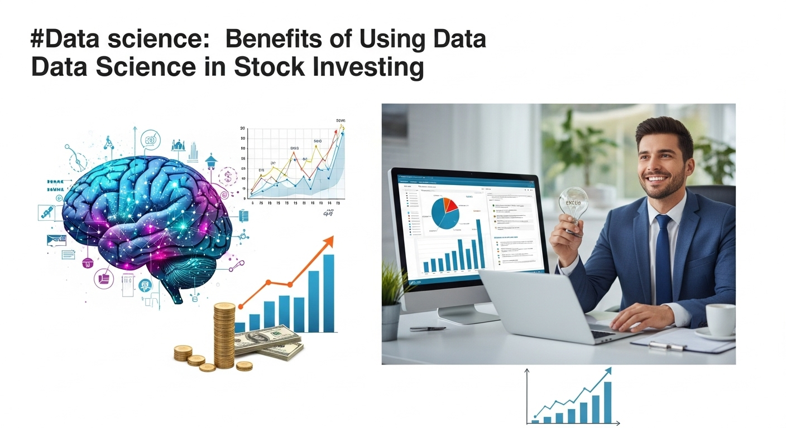
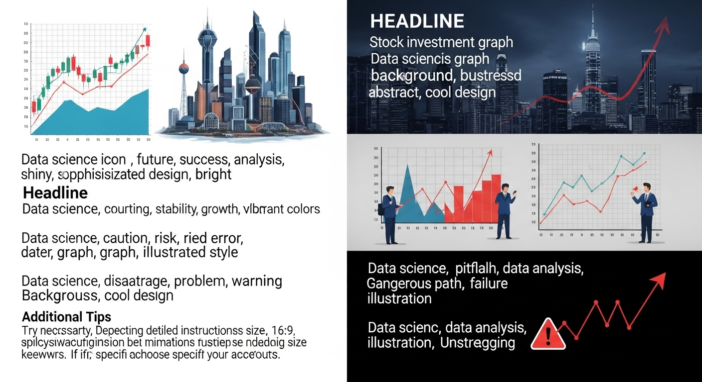
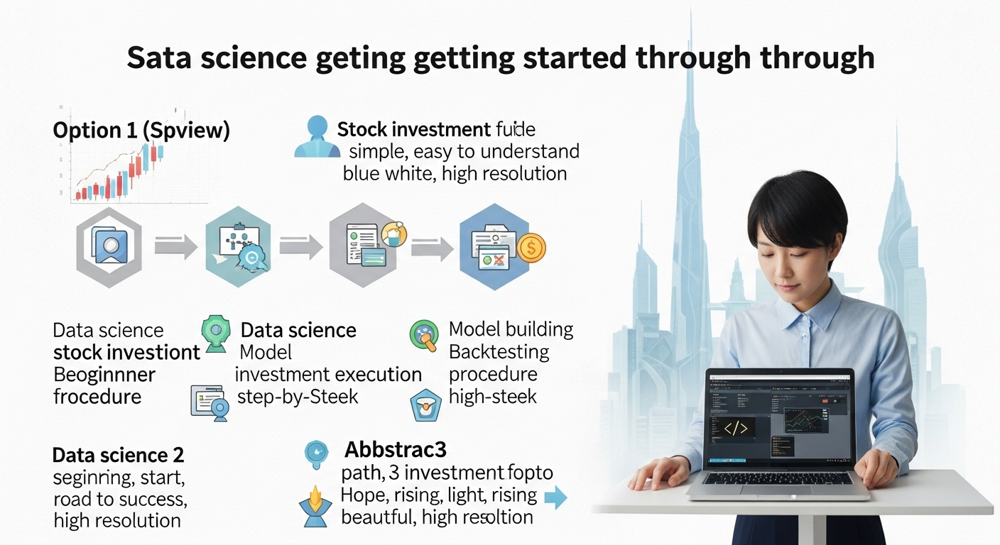

データサイエンスを株式投資に活用！安定利益へ導く実践手法
導入
株式投資。それは、企業の成長に自らの資金を投じ、その果実を共に享受するという、夢のある資産形成の手段です。日々のニュースで企業の活躍を目にし、応援したいという気持ちから、あるいは将来への備えとして、多くの方が株式市場に足を踏み入れます。しかし、その一方で、株式投資の世界は複雑で、時に非情な側面も持ち合わせています。市場は絶えず変動し、昨日まで輝いていた銘柄が、今日は大きく値を下げることも珍しくありません。「高値で買ってしまい、塩漬けになっている」「感情に流されてパニック売りしてしまった」そんな苦い経験をお持ちの方も、少なくないのではないでしょうか。
多くの個人投資家が頼りにするのは、経済ニュース、アナリストのレポート、あるいは自身の経験や「勘」といったものでしょう。これらはもちろん重要な情報源ですが、それだけで本当に激動の市場を勝ち抜いていくことができるのでしょうか。情報が溢れかえる現代において、私たちは膨大なデータに囲まれて生活しています。企業の財務データ、日々の株価、経済指標、ニュース記事、SNSの投稿。これら無数の情報の中にこそ、市場の未来を読み解く鍵が隠されているとしたら、どうでしょう。
ここで登場するのが「データサイエンス」です。データサイエンスとは、統計学、数学、プログラミングなどのスキルを駆使して、データの中から価値ある知見を引き出す学問分野です。これまで主にビジネスの意思決定や科学研究の分野で活用されてきましたが、近年、その力強い分析能力が金融、特に株式投資の世界で大きな注目を集めています。
なぜなら、データサイエンスは、私たち人間が陥りがちな「感情」や「思い込み」といったバイアスから解放された、客観的で冷静な投資判断を可能にしてくれるからです。人間の目では捉えきれない複雑なデータのパターンを読み解き、これまで誰も気づかなかったような投資のチャンスを教えてくれるかもしれません。また、面倒な情報収集や分析作業を自動化し、私たちを日々の煩雑な作業から解放してくれる可能性も秘めています。
この記事では、そんなデータサイエンスを株式投資に活用し、より安定的で再現性の高い利益を目指すための実践的な手法について、一から丁寧に解説していきます。「データサイエンスなんて、専門家だけの世界でしょう？」と感じる方もご安心ください。この記事は、データサイエンスがなぜ株式投資において強力な武器となるのか、その理由から具体的な活用事例、さらには学習を始めるためのステップまで、あなたの知識レベルに合わせて優しくガイドします。
勘と経験だけに頼る投資から、データという確かな羅針盤を手に入れる投資へ。この記事を読み終える頃には、あなたもその新しい世界の扉を開く準備ができているはずです。さあ、一緒にデータサイエンスで株式投資を次のレベルへと引き上げる旅を始めましょう。
データサイエンスが株式投資を変える！注目される理由
これまで多くの投資家が、長年の経験や深い洞察力、あるいは直感といったものを頼りに市場と向き合ってきました。もちろん、それらは今でも非常に価値のある能力です。しかし、現代の株式市場は、かつてないほど複雑化し、情報の流れるスピードも比較にならないほど速くなっています。このような環境下で、人間の能力だけを頼りに安定した成果を上げ続けることは、ますます困難になっていると言えるでしょう。
こうした背景から、データサイエンスが株式投資の世界で急速に注目を集めています。それは、データサイエンスが、従来の投資手法が抱えていた根本的な課題を解決し、新たな可能性を切り拓く力を持っているからです。では、具体的にどのような点が、投資の世界を変えるほどのインパクトを持つのでしょうか。ここでは、その３つの大きな理由について、詳しく見ていきたいと思います。
感情に左右されない客観的投資判断
株式投資で失敗する最も大きな原因の一つ、それは「感情」です。私たち人間は、合理的な判断を下そうと努めていても、知らず知らずのうちに行動経済学で指摘されるような心理的なバイアス（偏り）の影響を受けてしまいます。
例えば、「プロスペクト理論」というものがあります。これは、人は利益を得る喜びよりも、損失を被る痛みの方を強く感じるという理論です。このため、少し利益が出るとすぐに売って確定したくなる「利益確定急ぎ」に陥ったり、逆に損失が出ると「いつか戻るはずだ」と現実から目を背け、損切りできずに損失を拡大させてしまう「損失回避性」に縛られたりします。市場全体が熱狂しているときには、「この波に乗り遅れてはいけない」という焦り（FOMO: Fear of Missing Out）から、十分に分析しないまま高値で飛びついてしまうこともあります。逆に、市場が悲観に包まれているときには、本来は割安で絶好の買い場であるにもかかわらず、恐怖心から投げ売りしてしまうのです。
これらの感情的な判断は、長期的には資産を減らす大きな原因となります。頭では「安く買って高く売る」と分かっていても、いざその場になると、恐怖や欲望といった本能的な感情が合理的な思考を妨げてしまうのです。
ここで、データサイエンスがその真価を発揮します。データサイエンスに基づいた投資アプローチでは、あらかじめ定められた客観的なルールやモデルに基づいて投資判断を下します。例えば、「特定の財務指標がこの基準を満たし、かつ株価のテクニカル指標がこのシグナルを示した場合に買う」といったルールをプログラム化しておけば、市場がどのような雰囲気であろうと、そのルールに合致しない限りは売買を行いません。
そこには、恐怖も欲望も、焦りも希望的観測も介在する余地はありません。あるのは、過去のデータから導き出された、統計的に優位性の高いルールだけです。もちろん、そのルールが未来永劫通用する保証はありませんが、少なくともその時々の感情に振り回されて一貫性のない売買を繰り返すよりは、はるかに再現性が高く、長期的に安定したパフォーマンスを期待することができます。データサイエンスは、いわば冷静沈着で一切の感情を持たない優秀なアナリストを、常に自分の隣に置いておけるようなものなのです。これにより、私たちは人間であるがゆえの弱点を克服し、より規律ある投資を実践することが可能になります。
複雑な市場トレンドの早期発見
現代の株式市場は、世界中の経済指標、企業の業績、金融政策、地政学的リスク、さらにはSNSでの評判といった、無数の要因が複雑に絡み合って動いています。これらの膨大な情報の中から、株価に影響を与える本質的なシグナルを見つけ出し、将来のトレンドを予測することは、人間の認知能力をはるかに超えています。
私たちは、一度に処理できる情報量に限界があります。そのため、どうしても目立つニュースや、自分が理解しやすい情報にばかり注意が向きがちです。しかし、本当に重要なトレンドの芽は、そうした分かりやすい場所ではなく、一見すると無関係に見えるデータとデータの間の、微細な相関関係の中に隠れていることがよくあります。
データサイエンス、特に機械学習の技術は、このような人間では到底見つけ出すことのできない、複雑で非線形なパターンを発見することを得意としています。例えば、ある特定の原材料価格の変動が、数ヶ月後の特定の業界の株価に影響を与えている、といった関係性を見つけ出すことができるかもしれません。あるいは、企業の決算発表で使われる特定の単語の頻度が、その後の業績の先行指標になっている、といったパターンを発見することもあるでしょう。
具体的には、数千、数万という膨大な数の説明変数（株価に影響を与えうる要因データ）を同時に分析し、その中から株価の変動を最もよく説明できる変数の組み合わせを自動的に見つけ出してくれます。これにより、これまでアナリストの経験と勘に頼っていた「アノマリー（市場の非効率性）」と呼ばれる現象を、定量的に発見し、投資戦略に組み込むことが可能になります。
例えば、「小型株効果（時価総額の小さい企業の株価の方が、大きい企業の株価よりもリターンが高くなる傾向）」や「バリュー効果（PERやPBRが低い割安株の方が、リターンが高くなる傾向）」といった有名なアノマリーも、データ分析によってその有効性を検証し、自分の投資戦略に最適化することができます。
このように、データサイエンスは私たちの視野を劇的に広げ、これまで見過ごされてきた市場の非効率性や、トレンドの初期段階を捉えるための強力な”顕微鏡”や”望遠鏡”となってくれるのです。
投資戦略の効率化と自動化
個人投資家が直面する大きな壁の一つに、「時間的制約」があります。日中は本業で忙しく、投資のために割ける時間は限られています。その限られた時間の中で、膨大な数の銘柄の中から投資対象を探し出し、財務諸表を読み込み、日々のニュースを追いかけ、チャートを分析し、そして適切なタイミングで売買注文を出す…これら全ての作業を手作業で行うのは、非常に骨の折れることです。
この情報収集、分析、そして実行という一連のプロセスを劇的に効率化し、さらには自動化できるのが、データサイエンスのもう一つの大きな魅力です。
まず、情報収集の段階では、Webスクレイピングという技術を使えば、様々なウェブサイトから必要な情報（株価、財務データ、ニュース記事など）を自動で定期的に収集するプログラムを作ることができます。これにより、毎日手作業で複数のサイトをチェックする手間から解放されます。
次に、分析の段階です。収集したデータを使い、あらかじめ構築しておいた分析モデルを実行すれば、何千という全上場銘柄の中から、自分の投資基準に合致する有望な銘柄を瞬時にスクリーニング（絞り込み）することができます。例えば、「ROEが15%以上、自己資本比率が50%以上、かつ過去1ヶ月の株価上昇率がTOPIXを上回っている銘柄」といった条件をプログラムに与えれば、ものの数秒で候補リストを作成してくれます。
そして、最終的には実行の段階です。証券会社が提供しているAPI（Application Programming Interface）を利用すれば、分析の結果に基づいて売買注文を自動で発注するシステム（いわゆる「システムトレード」や「アルゴリズム取引」）を構築することも可能です。これにより、常に市場に張り付いている必要がなくなり、仕事中や睡眠中であっても、プログラムが自分に代わって最適なタイミングで取引を実行してくれます。
もちろん、完全自動化まで行かなくても、日々の分析作業を半自動化するだけでも、投資にかかる時間と労力は大幅に削減されます。こうして生まれた時間の余裕を、より本質的な投資戦略の考案や、新しい分析手法の学習に充てることができるようになります。データサイエンスは、私たち個人投資家を、時間という最大の制約から解き放ち、プロの機関投資家とも対等に渡り合える土俵へと引き上げてくれる、強力なサポーターなのです。
株式投資におけるデータサイエンスの活用事例
データサイエンスが株式投資の世界で注目される理由をご理解いただけたところで、次に、より具体的に「どのように活用されているのか」という実践的な事例を見ていきましょう。データサイエンスと一言で言っても、その応用範囲は非常に広く、様々な角度から投資パフォーマンスの向上に貢献します。ここでは、代表的な４つの活用事例を、それぞれ詳しく解説していきます。
株価予測モデルの構築
データサイエンスを投資に活用すると聞いて、多くの人が真っ先に思い浮かべるのが、この「株価予測」ではないでしょうか。過去の株価データや様々な経済指標を用いて、将来の株価が上がるか下がるか、あるいは具体的な価格を予測するモデルを構築する試みです。これはデータサイエンティストにとって最も挑戦的で、かつ魅力的なテーマの一つです。株価予測モデルは、用いるデータの種類や分析手法によって、いくつかのタイプに大別されます。
1. 時系列分析モデル
これは、過去の株価データそのものが持つパターンや周期性に着目して、未来を予測するアプローチです。代表的な手法に「ARIMA（自己回帰和分移動平均）モデル」があります。これは、過去の自身の値（自己回帰）、過去の予測誤差（移動平均）、そしてデータのトレンドをならすための階差（和分）という３つの要素を組み合わせて、将来の値を予測します。例えば、ある銘柄の株価に周期的な変動パターンが見られる場合、ARIMAモデルはそのパターンを学習し、「次のピークはいつ頃か」といった予測を行います。季節性のあるデータ（例えば、夏に需要が高まる企業の株価など）に対応するために拡張された「SARIMAモデル」なども存在します。これらのモデルは、統計的な基礎がしっかりしており、比較的解釈しやすいのが特徴ですが、外部要因の急な変化には弱いという側面もあります。
2. 回帰モデル（機械学習）
時系列分析が株価データのみを用いるのに対し、回帰モデルでは株価以外の様々な説明変数（要因）を使って予測を行います。例えば、目的変数（予測したいもの）を「明日の株価の終値」とし、説明変数として「今日の始値、高値、安値、出来高」「日経平均株価の変動率」「為替レート（ドル/円）」「米国市場（S&P500）の終値」といった複数のデータを入力します。
最も基本的な「線形回帰モデル」では、これらの説明変数が目的変数に直線的な影響を与えると仮定して予測式を作ります。しかし、実際の市場はもっと複雑な非線形の関係で動いているため、「ランダムフォレスト」や「勾配ブースティング（XGBoost, LightGBMなど）」といった、より高度な機械学習モデルがよく用いられます。これらのモデルは、多数の決定木というシンプルな予測器を組み合わせることで、複雑なデータの関係性を非常に高い精度で捉えることができます。例えば、「為替が円安に振れ、かつ米国市場が上昇している局面では、この輸出関連銘柄は上がりやすい」といった複雑な条件分岐を、データから自動的に学習してくれるのです。
3. 深層学習（ディープラーニング）モデル
近年、画像認識や自然言語処理の分野で目覚ましい成果を上げている深層学習も、株価予測に応用されています。特に、「LSTM（Long Short-Term Memory）」や「GRU（Gated Recurrent Unit）」といった、時系列データの扱いに特化したニューラルネットワークモデルが注目されています。これらのモデルは、データが持つ時間的な連続性や長期的な依存関係を捉えるのが得意です。例えば、単に昨日の株価だけでなく、数週間、数ヶ月にわたる株価のトレンドやパターンを記憶し、それを基に未来を予測することができます。これにより、従来のモデルでは捉えきれなかった、より長期的な文脈に基づいた予測が可能になると期待されています。ただし、深層学習モデルは非常に複雑で、大量のデータと高い計算能力を必要とするため、個人で扱うにはややハードルが高い側面もあります。
これらの予測モデルは、完璧に未来を当てる魔法の杖ではありません。しかし、統計的な優位性を持って「上がる確率が高い」あるいは「下がる確率が高い」といった判断を補助してくれる強力なツールとなり得ます。
企業のファンダメンタル分析への応用
株価予測が主にチャートの動きを分析する「テクニカル分析」に近いアプローチだとすれば、こちらは企業の財務状況や業績といった本質的価値を分析する「ファンダメンタル分析」にデータサイエンスを応用するアプローチです。従来、ファンダメンタル分析は、アナリストが財務諸表（貸借対照表、損益計算書、キャッシュフロー計算書）を丹念に読み解き、企業の健全性や成長性を評価するという、専門知識と経験が求められる作業でした。データサイエンスは、このプロセスをより効率的、客観的、かつ大規模に行うことを可能にします。
1. 財務指標の自動計算とスクリーニング
まず基本的な活用法として、企業の財務データをデータベース化し、様々な財務指標を自動で計算するプログラムを作成します。PER（株価収益率）、PBR（株価純資産倍率）、ROE（自己資本利益率）、自己資本比率、売上高成長率など、投資判断に用いる指標は数十種類にも及びます。これらを全上場企業（約4000社）について手計算するのは不可能ですが、プログラムを使えば一瞬で完了します。そして、これらの指標を組み合わせて、独自のスクリーニング条件を設定することができます。例えば、「過去3年連続で増収増益、かつROEが15%以上、かつPERが市場平均以下の成長割安株」といった条件で、有望な銘柄候補を瞬時にリストアップすることが可能です。
2. 企業の健全性・成長性スコアリング
さらに進んだ活用法として、複数の財務指標を組み合わせて、企業の「健全性スコア」や「成長性スコア」といった独自の総合評価指標を作成するモデルを構築できます。例えば、自己資本比率や流動比率といった安全性を示す指標群と、売上高成長率や利益成長率といった成長性を示す指標群、そしてROEやROAといった収益性を示す指標群を、機械学習モデル（例えばロジスティック回帰など）に入力します。そして、過去に倒産した企業や、逆に株価が大きく成長した企業の財務データを教師データとして学習させることで、「どのような財務パターンの企業が将来的に有望か（あるいは危険か）」を予測するモデルを作ることができます。これにより、単一の指標だけでは見えてこない、企業の総合的な実力を客観的なスコアとして評価できるようになります。
3. 業績予測モデルの構築
企業の四半期ごとの決算発表は、株価に最も大きな影響を与えるイベントの一つです。データサイエンスを使えば、過去の財務データや、業界の動向、マクロ経済指標などを説明変数として、将来の売上高や利益を予測する回帰モデルを構築することも可能です。例えば、ある小売企業の売上高を予測するために、過去の売上高の推移に加え、月次の小売売上高統計、消費者物価指数、天候データなどをモデルに組み込むことが考えられます。精度の高い業績予測ができれば、決算発表前に株価が割安な水準にあれば先行して投資したり、逆に市場の期待値が高すぎる（予測値が市場コンセンサスを大きく下回る）と判断すれば、リスクを回避したりといった戦略的な行動が可能になります。
このように、データサイエンスは、ファンダメンタル分析をより深く、広く、そして速く行うための強力な武器となるのです。
ニュースセンチメント分析による市場心理把握
株価は、企業の業績や財務状況といった合理的な要因だけで動くわけではありません。投資家たちの期待、不安、熱狂、恐怖といった「市場心理（マーケットセンチメント）」もまた、株価を大きく左右する重要な要素です。この目に見えない市場心理を、データを使って可視化しようというのが「センチメント分析」です。特に、ニュース記事やSNSの投稿といったテキストデータは、市場心理の宝庫と言えます。
この分析の中核をなすのが、「自然言語処理（NLP: Natural Language Processing）」という、コンピュータに人間の言葉を理解させるための技術です。具体的には、以下のような流れで分析が行われます。
1. データ収集
まず、分析対象となるテキストデータを収集します。ニュースサイトから特定の企業や経済に関連する記事をWebスクレイピングで集めたり、Twitter（現X）のAPIを使って特定のキーワード（例：「#日経平均」「$TSLA」など）を含む投稿をリアルタイムで収集したりします。決算短信や有価証券報告書の中の「事業等のリスク」や「経営方針、経営環境及び対処すべき課題等」といった定性的な記述部分も、貴重な分析対象となります。
2. テキストの前処理
収集したテキストデータは、そのままでは分析できません。不要な記号やURLの削除、大文字・小文字の統一、単語への分割（トークン化）、そして「です」「ます」といった意味を持たない単語（ストップワード）の除去など、分析しやすい形に整える「前処理」という作業が必要になります。
3. センチメントのスコアリング
前処理されたテキストデータから、その文章がポジティブな内容なのか、ネガティブな内容なのか、あるいは中立的なのかを判定し、数値化（スコアリング）します。これにはいくつかの手法があります。
- 辞書法: 「上昇」「好調」「革新的」といったポジティブな単語と、「下落」「懸念」「リスク」といったネガティブな単語をリスト化した「極性辞書」を用意します。そして、文章中に含まれるポジティブ単語とネガティブ単語の数を数え、その差分からセンチメントスコアを算出します。シンプルですが、文脈を考慮できないという弱点があります。
- 機械学習法: 大量のテキストデータに人間が「ポジティブ」「ネガティブ」のラベルを付けたものを教師データとして、機械学習モデルに文章のパターンを学習させます。これにより、「〜とは限らない」といった否定表現や、皮肉のような複雑なニュアンスもある程度捉えることが可能になります。近年では、BERTに代表されるような大規模言語モデルを用いることで、非常に高い精度でのセンチメント判定が実現しています。
4. 投資戦略への応用
こうして算出されたセンチメントスコアを時系列で追っていくことで、市場や個別銘柄に対する人々の関心やムードの変化を捉えることができます。例えば、ある企業に関するポジティブなニュースの量が急増したタイミングは、株価上昇の先行指標となるかもしれません。逆に、市場全体のセンチメントスコアが極端な楽観に傾いているときは、相場の天井が近いサインと捉え、警戒を強めるという判断もできます。このセンチメントスコアを、前述の株価予測モデルの説明変数の一つとして加えることで、モデルの予測精度をさらに向上させることも期待できます。
ポートフォリオ最適化
特定の銘柄を当てることだけが投資ではありません。どのような銘柄を、どのような比率で組み合わせるかという「ポートフォリオ管理」もまた、長期的な資産形成において極めて重要です。リスクを抑えつつ、リターンを最大化する。この理想的な資産の組み合わせを見つけ出すプロセスを「ポートフォリオ最適化」と呼び、これもまたデータサイエンスが得意とする領域です。
この分野の基礎となっているのが、ハリー・マーコウィッツが提唱した「現代ポートフォリオ理論（MPT: Modern Portfolio Theory）」です。この理論の核心は、「リスク（リターンのばらつき）とリターンはトレードオフの関係にあるが、値動きの異なる複数の資産を組み合わせる（分散投資する）ことで、個々の資産が持つリスクを低減させ、より効率的なリターンを得られる」という考え方です。
データサイエンスは、この理論を実践的なレベルで計算し、最適なポートフォリオを導き出すのに役立ちます。
1. 期待リターンとリスクの計算
まず、ポートフォリオに組み入れたい複数の銘柄（資産）について、それぞれの過去のデータから「期待リターン（平均的にどれくらいのリターンが見込めるか）」と「リスク（リターンの標準偏差、つまり価格変動の激しさ）」を計算します。さらに重要なのが、銘柄間の「相関」です。相関が低い（一方が上がるときに他方が下がる、あるいは無関係な動きをする）銘柄同士を組み合わせるほど、分散効果は高まります。
2. 効率的フロンティアの描画
次に、これらの銘柄を様々な比率で組み合わせた場合に、ポートフォリオ全体としてどのようなリターンとリスクになるかを、コンピュータで無数にシミュレーションします（モンテカルロシミュレーションなど）。例えば、A株30%：B株70%、A株50%：B株50%...といったように、何万通りもの組み合わせを計算します。その結果を「横軸：リスク、縦軸：リターン」のグラフ上にプロットすると、弓なりの曲線が描かれます。これを「効率的フロンティア」と呼びます。この線上にあるポートフォリオは、同じリスク水準の中では最も高いリターンが期待できる、最も効率的な組み合わせであることを意味します。
3. 最適ポートフォリオの決定
効率的フロンティアの中から、最終的にどのポートフォリオを選ぶかは、投資家自身のリスク許容度によって決まります。しかし、一般的には「シャープレシオ」という指標を最大化するポートフォリオが、最も運用効率が良いとされています。シャープレシオは「（リターン − 無リスク資産の利子率） ÷ リスク」で計算され、取ったリスク１単位あたり、どれだけのリターンを得られたかを示す指標です。データサイエンスの最適化アルゴリズムを用いれば、このシャープレシオが最大となる資産の組み合わせ（接点ポートフォリオ）を数学的に見つけ出すことができます。
このように、ポートフォリオ最適化は、勘や経験に頼りがちな資産配分の決定を、データに基づいた数理的なアプローチへと昇華させ、より合理的で規律ある資産管理を実現してくれるのです。
データサイエンスを株式投資に活かすメリット

ここまで、データサイエンスが株式投資の様々な場面で具体的にどのように活用されるかを見てきました。これらの活用事例からも明らかなように、データサイエンスを投資に取り入れることには、従来の投資手法にはない、数多くの明確なメリットが存在します。ここでは、そのメリットを４つの側面に整理して、改めてその魅力を深掘りしていきましょう。
メリット１．投資判断の精度向上とリスク軽減
データサイエンスを投資に活用する最大のメリットは、何と言っても「投資判断の精度向上」と、それに伴う「リスクの軽減」です。
従来の投資判断は、アナリストのレポートや経済ニュース、あるいは個人の経験といった、定性的で断片的な情報に依存する部分が大きいものでした。もちろん、それらの情報が間違っているわけではありません。しかし、情報が限定的であるために、見落としや解釈の誤りが生じる可能性は常に付きまといます。
一方、データサイエンスに基づくアプローチでは、過去数十年分にわたる膨大な株価データ、財務データ、マクロ経済指標、さらにはニュースセンチメントといった、多角的で定量的なデータを分析の土台とします。機械学習モデルは、これらのデータの中に潜む、人間では到底気づくことのできない複雑な相関関係やパターンを、統計的な裏付けをもって見つけ出してくれます。
例えば、ある投資戦略を思いついたとします。「PERが15倍以下で、かつゴールデンクロスが発生した銘柄を買う」というようなシンプルなルールです。従来であれば、この戦略が本当に有効かどうかは、実際に試してみるか、過去のいくつかの事例を思い返してみる程度しか検証の方法がありませんでした。しかし、データサイエンスの手法を用いれば、このルールを過去10年、20年といった長期間のデータに適用した場合に、どれくらいのリターンがあり、どれくらいの勝率で、最大でどれくらいの損失（最大ドローダウン）があったのかを、客観的な数値としてシミュレーション（バックテスト）することができます。
このバックテストを通じて、戦略の有効性を事前に検証し、より優位性の高いルールへと改善していくことが可能です。これにより、「なんとなく良さそう」という曖昧な根拠ではなく、「過去のデータ上、統計的にこれだけの優位性がある」という明確な根拠を持って投資に臨むことができるようになります。結果として、一つ一つの投資判断の精度が向上し、無駄なトレードや大きな失敗を減らすことができます。
また、ポートフォリオ最適化の技術を使えば、リターンを追求するだけでなく、リスクを積極的にコントロールすることも可能になります。自分の許容できるリスクの範囲内で、リターンを最大化するような資産の組み合わせを数学的に導き出すことで、市場の急な変動に対する耐性を高め、精神的にも安定した状態で資産運用を続けることができるようになります。これは、長期的な資産形成において非常に重要な要素です。
メリット２．感情的な判断の排除
本稿で繰り返し述べているように、人間は感情の生き物です。株式投資という、自分のお金が直接増減するシビアな世界においては、その感情が合理的な判断を曇らせる最大の敵となります。市場が熱狂に包まれ、誰もが「もっと上がる」と信じているときに冷静に利益を確定させること、あるいは市場が悲観のどん底にあり、誰もが投げ売りしているときに勇気を持って買い向かうことは、プロの投資家であっても至難の業です。
多くの個人投資家は、「高値掴み」と「狼狽売り」を繰り返してしまいます。株価が急騰しているのを見ると、「このチャンスを逃したくない」という欲望（FOMO）に駆られて飛びつき、結果的に最高値で買ってしまう。逆に、保有株が急落すると、「これ以上損をしたくない」という恐怖心から、底値圏で売却してしまう。これが、多くの人が市場で資産を失う典型的なパターンです。
データサイエンスに基づいたシステムトレードは、この人間最大の弱点を克服するための、最も効果的な処方箋と言えます。あらかじめ検証された優位性のあるルールをプログラム化し、そのシグナルに従って淡々と取引を実行する。そこには、「もっと上がるかもしれない」という欲望も、「もっと下がるかもしれない」という恐怖も入り込む余地はありません。
市場がどれだけ熱狂しようと、ルールが「売り」のシグナルを出せば売る。市場がどれだけ悲観に暮れようと、ルールが「買い」のシグナルを出せば買う。この徹底した規律こそが、長期的に市場で生き残り、利益を積み重ねていくための鍵となります。
もちろん、システムが常に正しい判断をするわけではありません。時には損失を出すこともあります。しかし重要なのは、その損失が感情的なパニックによるものではなく、あらかじめ想定されたリスクの範囲内での、戦略上必要なコストであると理解できることです。感情に振り回されることなく、一貫した投資哲学を貫き通す。データサイエンスは、そのための強力な精神的な支柱となってくれるのです。
メリット３．効率的な情報収集と分析
現代の個人投資家が直面するもう一つの大きな課題は、情報の洪水です。インターネットの普及により、誰もが瞬時に企業の決算情報や経済ニュースにアクセスできるようになりました。しかし、その一方で、情報量が爆発的に増加したため、どの情報が本当に重要なのかを見極め、それを分析して投資判断に結びつける作業は、ますます困難かつ時間を要するものになっています。
例えば、全上場企業約4000社の中から、自分の投資基準に合う銘柄を探し出すだけでも、大変な労力が必要です。一社一社、証券会社のサイトで財務データを確認し、チャートの形をチェックし、関連ニュースを読み込む…こんな作業を毎日続けていては、時間がいくらあっても足りません。
データサイエンスは、この煩雑で時間のかかるプロセスを劇的に効率化してくれます。WebスクレイピングやAPIを利用して、必要なデータを自動で収集・蓄積する。蓄積したデータを用いて、独自のスクリーニング条件で有望銘柄を瞬時にリストアップする。各銘柄のチャートパターンやテクニカル指標を自動で計算し、売買シグナルを検出する。ニュースのセンチメント分析を行い、市場の雰囲気を定量的に把握する。
これらの作業をプログラムに任せることで、これまで何時間もかかっていたリサーチや分析作業を、わずか数分で完了させることが可能になります。これにより、投資家は単純作業から解放され、より創造的で本質的な活動、例えば「新しい投資戦略の考案」「構築したモデルの改善」「マクロ経済の大きな流れを読む」といったことに、貴重な時間とエネルギーを集中させることができるようになります。
これは、特に日中は本業で忙しい兼業投資家にとって、計り知れないメリットと言えるでしょう。データサイエンスは、限られた時間という制約の中で投資パフォーマンスを最大化するための、強力なタイムマネジメント・ツールでもあるのです。
メリット４．新たな投資機会の発見
人間の思考には、どうしても限界や偏りが存在します。私たちは、自分が知っている業界や、普段から馴染みのある有名企業にばかり目が行きがちです。また、分析する際にも、PERやROEといった、誰もが注目するようなありふれた指標に頼ってしまいがちです。その結果、多くの投資家が同じような銘柄に殺到し、本来の価値以上に株価が買われてしまうことも少なくありません。
データサイエンスは、こうした人間の認知の限界を超えて、これまで誰も気づかなかったような新たな投資機会を発見する可能性を秘めています。
機械学習モデルは、私たちの思い込みや先入観なしに、純粋にデータだけを見て、株価と相関の高い因子の組み合わせを探し出します。その結果、例えば「特定の化学物質の価格動向が、あるニッチな電子部品メーカーの株価の先行指標となっている」とか、「気象データと特定の小売企業の売上との間に強い相関がある」といった、人間が直感的には思いつかないような、意外な関係性を見つけ出すことがあります。
また、センチメント分析を用いれば、まだ大手メディアでは取り上げられていないものの、SNS上で特定の技術やサービスに関するポジティブな言及が急増している、といったトレンドの萌芽を早期に捉えることができるかもしれません。これは、将来大きく成長する可能性を秘めた、いわゆる「テンバガー（株価が10倍になる銘柄）」を初期段階で発掘する手がかりになる可能性があります。
さらに、膨大なテキストデータを分析することで、企業の有価証券報告書の中に隠されたリスクやチャンスを読み解くこともできます。例えば、「事業等のリスク」の項目で、前年と比較して特定の単語（例：「訴訟」「規制強化」など）の使用頻度が急増している企業を自動でリストアップし、潜在的なリスクを事前に察知するといった応用も考えられます。
このように、データサイエンスは私たちの視野を強制的に広げ、市場のアナリストや他の投資家がまだ注目していない、未開拓の領域へと導いてくれます。それは、競争の激しい株式市場において、他者より一歩先んじるための独自の優位性（アルファ）を生み出す源泉となるのです。
データサイエンス活用における注意点とデメリット

ここまでデータサイエンスがもたらす素晴らしいメリットについて解説してきましたが、物事には必ず光と影があります。データサイエンスを株式投資に活用する道は、決して平坦なものではなく、いくつかの注意すべき点やデメリットが存在します。これらの課題を正しく認識し、現実的な期待値を持つことが、成功への第一歩となります。ここでは、事前に知っておくべき４つのハードルについて、正直にお話ししたいと思います。
デメリット１．高度なスキルと学習コスト
データサイエンスを株式投資に応用するためには、残念ながら「誰でもすぐに始められる」というわけにはいきません。複数の専門分野にまたがる、比較的高いレベルの知識とスキルが要求されます。
まず、プログラミングスキルが必須となります。特に、データ分析の世界で広く使われている「Python」というプログラミング言語の習得は避けて通れません。データの収集、加工、分析、可視化、モデルの構築といった一連の作業は、すべてプログラムを書いて実行することになります。基本的な文法はもちろん、Pandas（データ操作）、NumPy（数値計算）、Matplotlib/Seaborn（グラフ描画）、scikit-learn（機械学習）といった、データサイエンスで頻繁に利用されるライブラリ（便利な機能をまとめたもの）を使いこなせるようになる必要があります。
次に、統計学と数学の知識も不可欠です。平均、分散、標準偏差といった基本的な統計量の理解はもちろん、仮説検定、相関、回帰分析といった統計的な考え方を理解していなければ、データから得られた結果を正しく解釈することができません。また、機械学習アルゴリズムの多くは、線形代数や微分積分といった数学的な理論に基づいています。アルゴリズムの仕組みを深く理解し、適切に使いこなすためには、これらの数学的な素養が求められます。
そして、機械学習・深層学習の知識も必要です。どのような課題に、どのアルゴリズム（線形回帰、ランダムフォレスト、LSTMなど）を選択するのが適切か、モデルの性能を評価するための指標（正解率、適合率、RMSEなど）をどう解釈するか、そしてモデルのパラメータをどのように調整（チューニング）すれば性能が向上するのか、といった専門的な知識が要求されます。
これらのスキルをゼロから習得するには、相応の学習時間と努力が必要です。書籍やオンラインコースなどを活用して独学で進めることも可能ですが、一般的には、本格的に取り組むとなると数百時間単位の学習が必要になると言われています。この学習コストは、データサイエンス投資を始める上での最も大きな参入障壁と言えるでしょう。
デメリット２．データ収集と前処理の手間
「データサイエンスはデータが命」とよく言われます。どんなに高度な分析モデルを構築しても、その入力となるデータの質が低ければ、出てくる結果は無意味なものになってしまいます（「Garbage In, Garbage Out」の原則）。そして、株式投資分析に必要となる、質の高いデータを継続的に入手することは、実は簡単なことではありません。
まず、データの入手先の問題があります。日々の株価（始値、高値、安値、終値、出来高）のような基本的なデータは、Yahoo Financeなどを通じて無料で入手できるものもあります。しかし、企業の詳細な財務データ（四半期ごとの貸借対照表や損益計算書の全項目など）や、数十年分にわたる長期のヒストリカルデータ、あるいはリアルタイムのニュースフィードといった、より専門的なデータは、有料のデータベンダーから購入する必要がある場合がほとんどです。これらのデータは、個人で購入するには高額なケースも少なくありません。
次に、たとえデータを手に入れたとしても、すぐに分析に使えるわけではない、という問題があります。収集した生のデータは、多くの場合、不完全で整理されていない状態です。
- 欠損値: 特定の日のデータが抜け落ちている、あるいは入力されていない。
- 外れ値: 誤入力やシステムエラーにより、明らかに異常な値が含まれている。
- 表記の不統一: 企業名が「株式会社A」と「(株)A」のように、異なる表記で混在している。
- フォーマットの違い: データソースによって日付の形式や数値の単位が異なる。
これらの問題を解決するために、「データ前処理（クレンジング）」という地道で時間のかかる作業が必要になります。欠損値をどのように補完するか（平均値で埋める、前後の値から推測する、など）、外れ値をどう扱うか（削除する、別の値に置き換える、など）といった判断は、分析結果に大きな影響を与えるため、慎重に行う必要があります。データ分析プロジェクトにおいて、全作業時間の実に8割が、このデータ収集と前処理に費やされるとも言われています。この泥臭い作業を厭わずにやり遂げる忍耐力が求められます。
デメリット３．モデルの過学習と将来予測の限界
機械学習モデルを構築する際に、最も注意しなければならない罠の一つが「過学習（オーバーフィッティング）」です。これは、モデルが訓練に使った過去のデータ（訓練データ）に過剰に適合してしまい、そのデータに含まれるノイズや偶然のパターンまで学習してしまう現象です。その結果、訓練データに対しては非常に高い精度を発揮するものの、未知の新しいデータ（未来のデータ）に対しては全く役に立たない、という事態に陥ります。
例えるなら、模擬試験の問題と答えを丸暗記して100点を取った生徒が、本番の試験では少し問題の形式が変わっただけで全く歯が立たなかった、という状況に似ています。バックテストで素晴らしいパフォーマンスを示したモデルが、いざ実運用（フォワードテスト）を始めると、全く利益が出ない、あるいは大きな損失を出してしまう、というケースの多くは、この過学習が原因です。
過学習を防ぐためには、データを訓練用と検証用に分割してモデルの汎化性能を評価したり、モデルの複雑さを制限する（正則化）といったテクニックが必要になります。しかし、特に金融市場のデータはノイズが多く、シグナル（本質的なパターン）が微弱であるため、過学習を完全に避けることは非常に困難です。バックテストの結果が良すぎる場合は、むしろ過学習を疑うくらいの慎重さが必要です。
また、そもそもデータサイエンスによる予測は、あくまで「過去のデータの中に存在するパターンが、未来も継続する」という仮定に基づいています。しかし、金融市場は、これまで誰も経験したことのないような、全く新しい出来事（ブラック・スワン）が起こりうる世界です。例えば、大規模な金融危機、パンデミック、画期的な技術革新といったパラダイムシフトが起きた場合、過去のデータから構築されたモデルは全く機能しなくなる可能性があります。データサイエンスは万能ではなく、その予測には限界があるということを、常に心に留めておく必要があります。
デメリット４．最新情報の継続的なキャッチアップの必要性
データサイエンスの世界は、日進月歩で進化しています。次々と新しいアルゴリズムや分析手法が開発され、昨日まで最先端だった技術が、今日には時代遅れになっている、ということも珍しくありません。例えば、数年前まではXGBoostのような勾配ブースティング系の手法が主流でしたが、現在ではTransformerベースの深層学習モデルなど、さらに新しい技術が登場しています。
また、金融市場そのものも常に変化し続けています。市場のルールが変更されたり、新しい金融商品が登場したり、投資家の行動パターンが変化したりすることで、これまで有効だった投資戦略（アノマリー）が、いつの間にか通用しなくなる（消滅する）ことがあります。
したがって、データサイエンスを投資に活用し続けるためには、一度モデルを作って終わり、というわけにはいきません。
- 技術トレンドのキャッチアップ: データサイエンス分野の最新の研究論文や技術ブログを読み、新しい手法を学び続ける必要があります。
- 市場環境の変化への対応: 構築したモデルのパフォーマンスを定期的に監視し、市場の変化に合わせてモデルを再学習させたり、パラメータを調整したりといった、継続的なメンテナンスが不可欠です。
- 新しいデータソースの探索: これまで利用していなかったオルタナティブデータ（衛星画像、POSデータ、クレジットカード決済データなど）が登場すれば、それを自身のモデルに組み込むことで、新たな優位性を築ける可能性があります。
この「学び続ける姿勢」と「モデルを改善し続ける努力」を怠ると、せっかく築いた優位性も、あっという間に失われてしまいます。データサイエンス投資は、ゴールのあるマラソンではなく、終わりなき探求の旅なのです。
株式投資でデータサイエンスを始める流れ

データサイエンスを株式投資に活用することの魅力と、同時に乗り越えるべき課題についてご理解いただけたかと思います。では、もしあなたが「それでも挑戦してみたい」と感じたなら、具体的にどこから手をつければ良いのでしょうか。ここでは、知識ゼロの状態から、実際にデータサイエンスを投資に活用できるようになるまでの、現実的なステップを４つの流れに沿ってご紹介します。焦らず、一歩ずつ着実に進んでいきましょう。
流れ１．必要な知識とスキルを習得する
何よりもまず、基礎となる知識とスキルを身につけることから始まります。前述の通り、プログラミング、統計学、機械学習という３つの柱をバランス良く学ぶことが重要です。
ステップ1: Pythonプログラミングの基礎を固める
全ての土台となるのがプログラミング言語Pythonです。まずは、データサイエンス以外の一般的なPythonの入門書やオンラインコースで、基本的な文法を学びましょう。
- 学習項目: 変数、データ型（数値、文字列、リスト、辞書）、条件分岐（if文）、繰り返し（for文）、関数、クラスの概念など。
- おすすめ学習リソース:
- 書籍: 『独習Python』『スッキリわかるPython入門』など、初心者向けに丁寧に解説されている書籍。
- オンライン学習サイト: Progate, ドットインストール, Udemy, Courseraなど。動画を見ながら実際に手を動かして学べるプラットフォームが効果的です。
- 目標: 簡単な計算やデータ処理のスクリプトを、自力で書けるようになるレベルを目指しましょう。
ステップ2: データサイエンス向けPythonライブラリを学ぶ
Pythonの基礎が固まったら、次にデータ分析に特化したライブラリの使い方を習得します。これらを使いこなせるようになると、データ分析の効率が飛躍的に向上します。
- Pandas: Excelのような表形式のデータを自在に扱うためのライブラリ。データの読み込み、抽出、加工、集計など、データ前処理の中心的な役割を担います。
- NumPy: 高速な数値計算、特に配列や行列の計算を行うためのライブラリ。多くの機械学習ライブラリの基盤となっています。
- Matplotlib / Seaborn: データをグラフ化（可視化）するためのライブラリ。分析結果を視覚的に理解し、インサイトを得るために不可欠です。
- scikit-learn: 機械学習のための総合的なライブラリ。回帰、分類、クラスタリングなど、主要なアルゴリズムがほとんど実装されており、統一されたインターフェースで手軽に利用できます。
ステップ3: 統計学と機械学習の理論を学ぶ
ライブラリの使い方と並行して、その背景にある理論的な知識も学んでいきましょう。なぜこの手法を使うのか、結果をどう解釈すれば良いのかを理解するために重要です。
- 統計学: 平均、分散、標準偏差、正規分布、相関係数、仮説検定など、統計学の基本的な概念を理解しましょう。大学の教養課程レベルの教科書や、統計検定2級程度のテキストが参考になります。
- 機械学習: 教師あり学習（回帰、分類）、教師なし学習（クラスタリング）、過学習、交差検証、評価指標（RMSE, 決定係数, 混同行列など）といった、機械学習の基本的なフレームワークと用語を学びます。最初は難しい数式を完全に理解する必要はありません。「何ができて、何を目的としているのか」という全体像を掴むことを優先しましょう。
この学習フェーズは、最も時間と忍耐が必要な段階です。しかし、ここでの基礎固めが、後々の応用力に大きく影響します。焦らず、楽しみながら学ぶ姿勢が大切です。
流れ２．データ収集と分析環境の準備
知識のインプットと並行して、実際にデータを触るための環境を整えましょう。理論を学ぶだけでなく、手を動かすことで理解は格段に深まります。
ステップ1: 分析環境の構築
プログラミングとデータ分析を行うための環境を自分のPCに準備します。
- Anacondaのインストール: これが最も簡単でおすすめの方法です。Anacondaは、Python本体に加えて、前述のPandasやNumPy、scikit-learnといった主要なデータサイエンスライブラリ、さらにはJupyter Notebookという対話型の開発環境まで、必要なものを一括でインストールしてくれる便利なパッケージです。
- Jupyter Notebook / JupyterLab: データ分析で最も広く使われているツールです。プログラムコード、その実行結果、文章、グラフなどを一つのノートブック形式のファイルにまとめて記録できます。試行錯誤しながら分析を進めるのに非常に適しています。
- Google Colaboratory: 自分のPCに環境を構築するのが難しい場合や、より高い計算能力が必要な場合に便利なのが、Googleが提供する無料のクラウド環境です。Webブラウザさえあれば、すぐにPythonとJupyter Notebookの環境を利用でき、GPUも無料で使えるため、深層学習などを試す際にも重宝します。
ステップ2: データの収集
分析するための株式データを収集します。最初は無料で入手できるデータから始めましょう。
- yfinance / pandas-datareader: Pythonのライブラリで、米Yahoo! Financeなどから株価データを簡単に取得できます。特定の銘柄の指定した期間の四本値（始値、高値、安値、終値）や出来高を数行のコードでダウンロードでき、練習用として最適です。
- 各種APIの利用: 証券会社によっては、個人投資家向けに株価データや注文執行機能を提供するAPIを公開している場合があります（例: SBI証券、楽天証券など）。よりリアルタイムに近いデータや、詳細なデータが必要になった場合に検討しましょう。
- Webスクレイピング: 企業の財務データなどをウェブサイトから自動で収集する手法です。ただし、サイトによっては利用規約で禁止されている場合もあるため、注意が必要です。まずは`requests`や`BeautifulSoup4`といったPythonライブラリの使い方を学ぶと良いでしょう。
収集したデータは、CSVファイルなどの形式でPCに保存し、Pandasを使っていつでも読み込めるように整理しておきましょう。
流れ３．簡易モデルの構築と検証
基礎知識と環境が整ったら、いよいよ簡単な分析モデルの構築に挑戦します。最初から複雑で完璧なものを目指す必要はありません。まずは「動くものを作る」ことを目標に、小さな成功体験を積み重ねていくことが大切です。
ステップ1: データの可視化と基礎分析
まずは収集した株価データをPandasで読み込み、Matplotlibを使ってグラフにしてみましょう。
- 終値の時系列プロット
- 移動平均線（5日線、25日線など）の計算とプロット
- 日次リターンの計算とヒストグラムの作成
データを視覚的に捉えることで、その銘柄の特性や、分析のヒントが見えてきます。
ステップ2: シンプルな売買ルールのバックテスト
次に、有名なテクニカル指標に基づいた簡単な売買ルールをプログラムで実装し、過去のデータでその有効性を検証（バックテスト）してみましょう。
- ゴールデンクロス・デッドクロス戦略: 短期移動平均線が長期移動平均線を上抜けたら「買い」、下抜けたら「売り」という、最も古典的で分かりやすい戦略です。この売買ルールに従って過去のデータで取引した場合、最終的に資産がどうなったかをシミュレーションするプログラムを作成します。
- RSI（相対力指数）戦略: RSIが30%を下回ったら「買われすぎ」として買い、70%を上回ったら「売られすぎ」として売る、といった逆張り戦略を実装してみます。
このバックテストを通じて、損益の推移、勝率、平均利益、平均損失、最大ドローダウンといった指標を計算し、その戦略が本当に優位性を持っていたのかを客観的に評価します。
ステップ3: 簡単な機械学習モデルの構築
バックテストに慣れてきたら、scikit-learnを使って簡単な予測モデルを構築してみましょう。
- 明日の株価が上がるか下がるかの二値分類問題:
- 目的変数: 明日の終値が今日の終値より高ければ「1」、低ければ「0」
- 説明変数: 今日の日足の各指標（始値と終値の差、高値と安値の差など）、過去数日間の移動平均線、RSIなど。
- モデル: ロジスティック回帰や決定木など、比較的解釈しやすいシンプルなモデルから試してみましょう。
- 評価: 訓練データとテストデータに分割し、テストデータに対する正解率や混同行列を評価します。
この段階では、高い予測精度を出すことよりも、データの前処理からモデルの学習、評価までの一連の流れを、自分の手で一通り経験することが目的です。
流れ４．実践と改善の繰り返し
簡易モデルの構築と検証ができるようになったら、ここからは「改善」のフェーズに入ります。データサイエンス投資は、一度モデルを作って終わりではありません。分析と検証、そして改善というPDCAサイクルを回し続けることで、少しずつパフォーマンスを高めていく、地道なプロセスです。
- 特徴量の追加: 説明変数（特徴量）を増やしてみましょう。テクニカル指標の種類を増やしたり、マクロ経済指標（金利、為替など）のデータを加えたり、ニュースのセンチメントスコアを組み込んだりすることで、モデルの精度が向上する可能性があります。
- モデルの変更: より複雑で高性能なモデル（ランダムフォレスト、勾配ブースティングなど）を試してみましょう。
- パラメータチューニング: 各モデルには、性能を左右する様々なパラメータ（ハイパーパラメータ）があります。グリッドサーチやベイズ最適化といった手法を用いて、最適なパラメータの組み合わせを探します。
- 過学習への対策: バックテストの結果が良すぎる場合は、過学習を疑い、モデルを簡素化したり、正則化を取り入れたりといった対策を講じます。
- フォワードテスト: バックテストで有望な結果が出たモデルは、次にフォワードテスト（実運用と同じ環境で、未知のデータに対して性能を検証すること）を行います。ペーパートレードや非常に少額での実運用で、モデルが本当に機能するかを慎重に見極めます。
このサイクルを根気強く回し続けること。それこそが、データサイエンスを株式投資で成功させるための王道と言えるでしょう。
株式投資でデータサイエンスを成功させる秘訣
データサイエンスを株式投資に活用するための具体的な流れを理解したところで、最後に、この挑戦を成功に導き、長期的に成果を出し続けるための「秘訣」とも言えるマインドセットや心構えについてお話しします。高度な技術も重要ですが、それと同じくらい、あるいはそれ以上に、どのような姿勢で取り組むかが成否を分けます。
継続的な学習と実践
これが最も重要かつ基本的な秘訣です。前述の通り、データサイエンスの世界も金融市場も、常に変化し続けています。一度学んだ知識だけで、未来永劫勝ち続けることは不可能です。
学習の習慣化:
毎日30分でも良いので、技術ブログを読んだり、新しい論文に目を通したり、オンラインコースの動画を一つ見たりと、学習を習慣にすることが大切です。特に、Kaggleのようなデータ分析コンペティションのプラットフォームは、世界中のデータサイエンティストがどのようなアプローチで課題に取り組んでいるかを知ることができる、絶好の学習の場です。金融データに関するコンペも開催されることがあるため、積極的に参加してみると良いでしょう。
実践のサイクルを止めない:
知識をインプットするだけでなく、必ず手を動かしてアウトプットすることを心がけましょう。新しい手法を学んだら、すぐに自分の分析環境で試してみる。思いついたアイディアがあれば、まずは簡単なコードを書いてバックテストをしてみる。この「学習→実践→検証→改善」というサイクルを止めずに回し続けることが、スキルを定着させ、モデルを洗練させていく唯一の方法です。最初はうまくいかないことの方が多いかもしれません。しかし、その失敗の一つ一つが、次への貴重な学びとなります。諦めずに粘り強く続ける姿勢が、最終的な成功につながります。
投資戦略とデータ分析の融合
データサイエンスは、あくまで強力な「ツール」であり、それ自体が目的ではありません。しばしば技術志向の強い人は、モデルの予測精度を0.1%でも高めることに夢中になり、本来の目的である「投資で利益を上げる」ということを見失いがちです。
ドメイン知識の重要性:
成功するためには、データサイエンスのスキルと、金融・投資に関する深い知識（ドメイン知識）を融合させることが不可欠です。「なぜこの財務指標が重要なのか」「この経済指標の発表が市場にどう影響するのか」「この業界は今どのようなトレンドにあるのか」といった、市場の背景にある文脈を理解していなければ、データから得られた結果を正しく解釈し、有効な投資戦略に結びつけることはできません。データ分析の結果が、自分の持っている市場に対する仮説を裏付けるものなのか、あるいは新たな視点を与えてくれるものなのかを、常に自身の投資哲学と照らし合わせながら考えることが重要です。
ツールに振り回されない:
最新の深層学習モデルが、必ずしも古典的な統計モデルより優れた結果を出すとは限りません。重要なのは、自分の投資戦略や扱うデータの特性に合わせて、最適なツールを選択することです。時には、複雑なモデルよりも、シンプルで解釈しやすいモデルの方が、頑健で安定したパフォーマンスを発揮することもあります。技術的な面白さや流行に流されるのではなく、「この戦略を実現するために、どの手法が最も合理的か」という視点を常に持つようにしましょう。データサイエンスは、あなたの投資戦略を補助し、強化するためのものであり、その逆ではないのです。
少額から始めてリスクを抑える
データサイエンスを用いてバックテストを行い、素晴らしい結果が出ると、すぐにでも大きな資金を投じて実践したくなるかもしれません。しかし、それは非常に危険な考え方です。バックテストはあくまで過去のデータに対するシミュレーションであり、未来の利益を保証するものではありません。
ペーパートレードとフォワードテストの徹底:
バックテストで有望な戦略が見つかったら、まずはペーパートレード（仮想の資金で取引のシミュレーションを行うこと）で、その実力を試しましょう。少なくとも数ヶ月間はペーパートレードを続け、実際の市場環境（スリッページや手数料なども考慮）で、モデルが想定通りに機能するかどうかを慎重に見極めます。この期間をフォワードテストと呼び、バックテストでは見えなかった問題点（例えば、特定の市場環境下でのパフォーマンスの悪化など）が明らかになることもあります。
失っても構わない範囲の資金で:
フォワードテストでも良好な結果が得られたら、いよいよ実弾での運用を開始します。しかし、ここでも決して焦ってはいけません。最初は、万が一全額を失っても、生活や精神に大きな影響が出ない範囲の、ごく少額の資金から始めましょう。実際に自分のお金が動くようになると、バックテストの時には感じなかったプレッシャーや感情の揺れを経験するはずです。少額での運用を通じて、システムの挙動だけでなく、自分自身の心理的な反応も確認し、徐々に取引額を増やしていくのが賢明なアプローチです。リスク管理こそが、市場で長く生き残るための最重要スキルであることを忘れないでください。
最新技術とトレンドへのアンテナ
最後に、常に好奇心を持ち、広い視野で情報収集を続ける姿勢が大切です。自分の専門領域だけに閉じこもっていては、大きなチャンスを見逃してしまうかもしれません。
技術トレンドへのアンテナ:
データサイエンスの分野だけでなく、関連するテクノロジーの動向にも注意を払いましょう。例えば、クラウドコンピューティングの進化により、個人でも大規模な計算リソースが安価に利用できるようになりました。また、APIエコノミーの発展により、これまでアクセスできなかったような多様なデータを、プログラム経由で簡単に取得できるようになっています。これらの技術トレンドをいち早くキャッチし、自分の分析に取り入れることで、他者に対する優位性を築くことができます。
オルタナティブデータの活用:
株価や財務データといった伝統的なデータだけでなく、近年では「オルタナティブデータ」と呼ばれる新しいデータソースの活用が注目されています。
- 衛星画像: 工場の稼働状況や、駐車場の車の数から、企業の生産活動や小売店の客足を推測する。
- POSデータ: スーパーやコンビニの販売データから、商品の売れ行きや消費トレンドを分析する。
- 位置情報データ: スマートフォンのGPSデータから、人々の移動パターンや商業施設への来訪者数を把握する。
- ウェブトラフィック: 企業のウェブサイトへのアクセス数から、製品やサービスへの関心度を測る。
これらのオルタナティブデータは、企業の業績を、公式発表よりも早く知るための先行指標となる可能性を秘めています。どのような新しいデータが利用可能になっているか、常にアンテナを張っておくことが、未来の投資機会を掴む鍵となるでしょう。
これらの秘訣は、一朝一夕に身につくものではありません。しかし、これらを常に意識し、日々の活動に取り入れることで、あなたは単なるデータ分析者ではなく、データという羅針盤を自在に操り、激動の市場という大海原を航海する、真の「データサイエンス投資家」へと成長していくことができるはずです。
まとめ：データサイエンスで株式投資を次のレベルへ
この記事では、データサイエンスを株式投資に活用するための、その理由から具体的な手法、学習のステップ、そして成功のための秘訣まで、包括的に解説してきました。
私たちはまず、データサイエンスがなぜ現代の株式投資において強力な武器となるのか、その３つの大きな理由を確認しました。それは、①投資判断から「感情」という最大のノイズを取り除き、客観性と規律をもたらしてくれること、②人間の目では捉えきれない、膨大なデータの中に隠された複雑な市場のパターンを発見してくれること、そして③煩雑な情報収集や分析作業を自動化し、私たちを時間的制約から解放してくれること、でした。
次に、株価予測モデルの構築、企業のファンダメンタル分析への応用、ニュースセンチメント分析による市場心理の可視化、そしてポートフォリオ最適化といった、具体的な活用事例を見てきました。これらは、データサイエンスが投資のあらゆるプロセスにおいて、そのパフォーマンスを向上させるポテンシャルを秘めていることを示しています。
もちろん、その道のりは決して簡単なものではありません。プログラミングや統計学といった専門的なスキルの習得には時間がかかりますし、質の高いデータの確保や、モデルの過学習といった技術的な課題も存在します。しかし、それらのハードルは、決して乗り越えられない壁ではありません。
本稿で示した「始めるための４つの流れ」――①知識とスキルの習得、②環境の準備、③簡易モデルの構築と検証、④実践と改善の繰り返し――に沿って、一歩ずつ着実に進んでいけば、誰でもデータサイエンス投資の世界に足を踏み入れることができます。大切なのは、最初から完璧を目指すのではなく、小さな成功体験を積み重ねながら、学び続ける姿勢です。
勘と経験だけに頼った、再現性の低い投資スタイルから卒業しませんか。市場の熱狂や悲観に振り回され、一喜一憂する日々から抜け出しませんか。データサイエンスは、あなたに「データ」という客観的な根拠に基づいた、冷静で、規律ある、そして何より自分自身でコントロール可能な投資スタイルを授けてくれます。それは、長期的に安定した資産を築いていく上で、この上なく頼もしいパートナーとなるでしょう。
この記事が、あなたの投資家としてのキャリアを、新たなステージへと引き上げるための一助となれば、これに勝る喜びはありません。未来の投資は、すでに始まっています。さあ、データと共に、株式投資の新たな冒険へと旅立ちましょう。